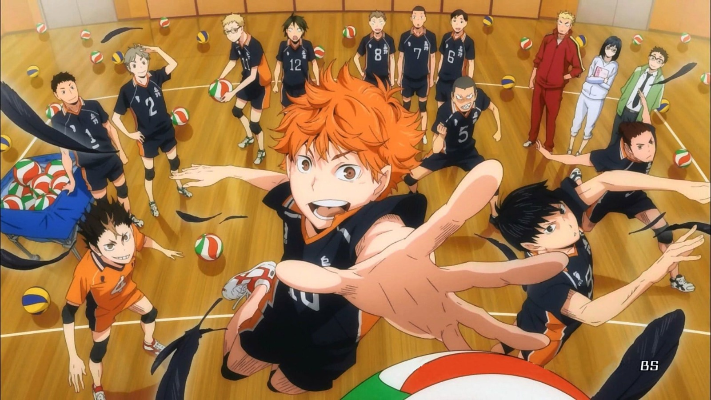

Bu yazıyı okuyan veya okuyanı dinleyen herkese merhaba. Ben Yavuz Selim Ateş. İstanbul'un güzel ilçesi Üsküdar'da gözlerini hayata açmış, o zamanlar iki çocuklu ailenin yeni üyesi, şimdi ise ortamlarda en küçüğün bir büyüğü diye tanıtılan bir gencim. Özgürlükçü ve çocuklarını kıramayan bir baba, eşine göre biraz daha az özgürlükçü bir anne benim ebeveynlerim. Tokatlı bu çiftin, birbirinden farklı üç çocuğuyla büyüyen ve en az onlar kadar garip birisiyim.
Futbol izlemeyi, haberlerini takip etmeyi ve oynamayı çok severim. Galatasaraylıyım ve Ali Samiyen'de birkaç maç izleme şansı yakaladım.
Bu da izlediğim Beşiktaş maçından bir fotoğraf.

Burada ise Barça maçındayım.

"Haikyuu" adlı bir animeyi izledikten sonra da voleybola karşı yakınlaştım.
Alttaki fotoğraf animeden.
Buradaki linkten animenin bölümlerine bakabilirsiniz. diziwatch/haikyuubölümleri
Voleybola karşı tüm önyargılarımı yıkmasının sebebi de voleybolu öğretmesi, hiç sandığım gibi bir spor değilmiş. Artık oynaması da çok zevk veriyor.
Basketboldansa nefret ederim.

Bir de bisiklet sürmeyi çok severim. 2021'de sırasıyla İstanbul, Kocaeli, Sakarya, Düzce, Bolu, Çankırı, Kırkkale, Yozgat ve Tokat'dan geçerek köye gittim. Gerçekten çok zevkliydi. Buraya o zaman bana yardımcı olan bisikletçilerin formunun linkini bırakıyorum. bisikletforum.com